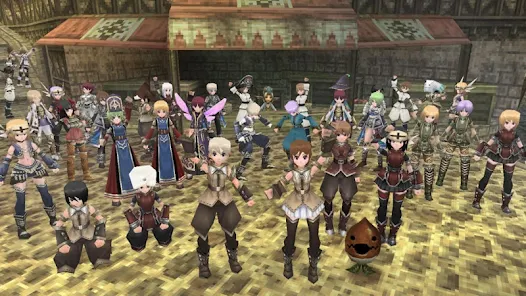

(home)
イルーナ戦記について (N5)

イルーナ
戦記
は
日本
で
作られた
MMORPG
です。 この
ゲーム
は
アソビモ
によって
開発
されました。 イルーナ戦記は2008年に
リリース
されました。 このゲームは
スマートフォン
や
パソコン
で
プレイ
できます。
多く
の
プレイヤー
がイルーナ戦記を
楽しんでいます
。
イルーナ戦記の
世界
は
広大
で、
美しいです
。 プレイヤーは
キャラクター
を
作り
、
冒険
します。
戦闘
や
クエスト
を
通して
、
経験値
を
獲得
します。
仲間
と
一緒
に
協力
して
強敵
に
挑戦
します。 いろいろな
職業
や
スキル
を
選べる
ので、
プレイスタイル
は
自由
です。
このゲームは
定期的
に
更新
され、
新しい
コンテンツ
が
追加されます
。
イベント
や
キャンペーン
もよく
行われます
。
プレイヤー同士
で
コミュニケーション
を
取ることができます
。
ギルド
に
参加して
、
仲間
と
一緒
に
活動
できます。 イルーナ戦記は
長い間
愛されている
ゲームです。
豆知識
: イルーナ戦記は、
日本
だけでなく、
世界中
の
プレイヤー
にも
人気
があります。
Webpage compiled on 2024-08-06, 16:38 using
WebSCFL
.